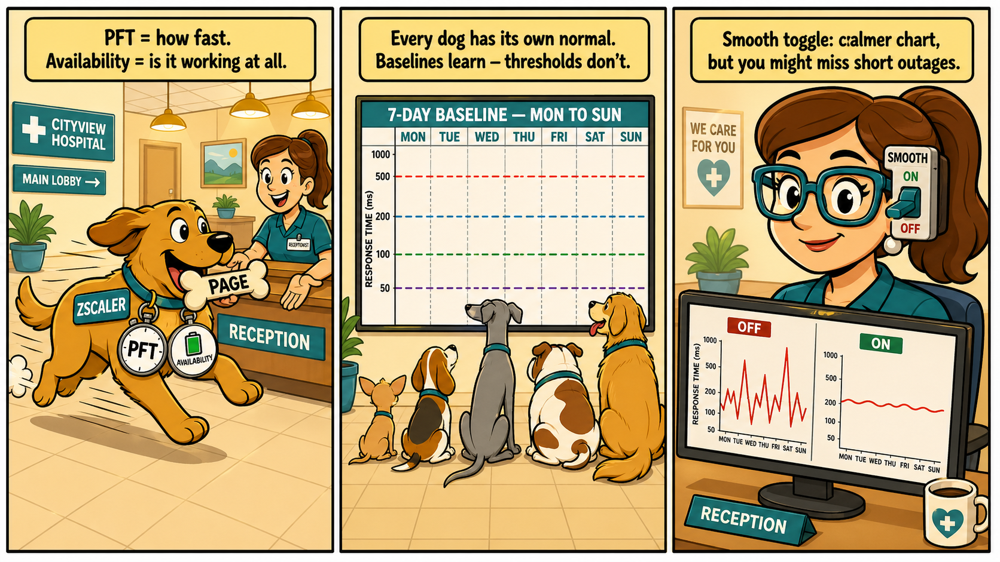
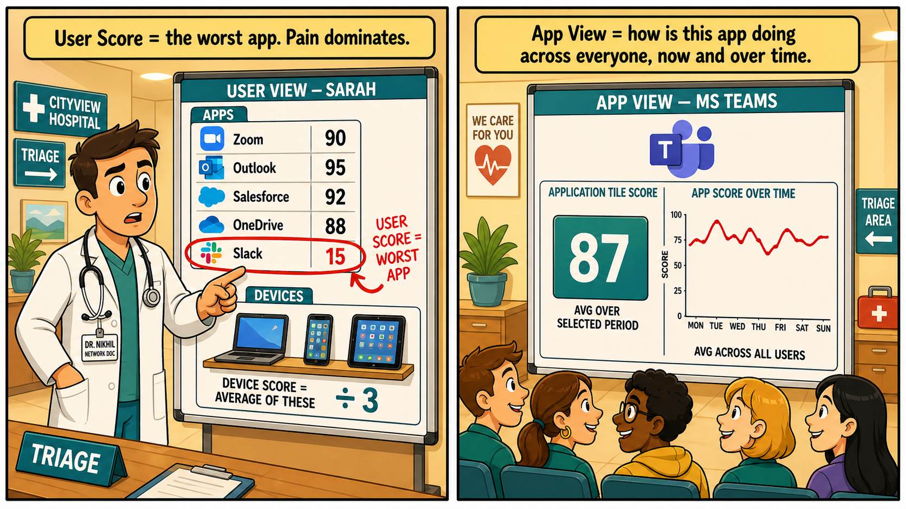
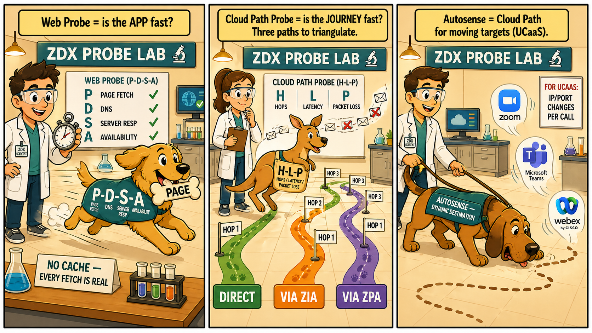
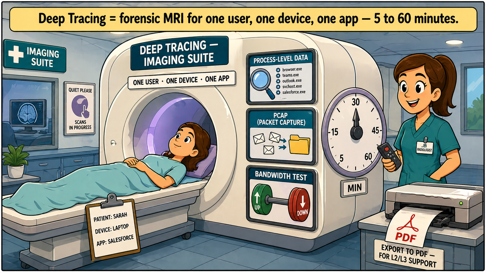
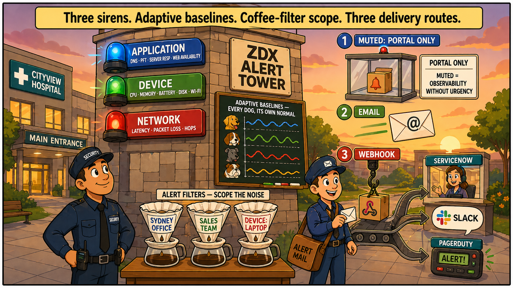
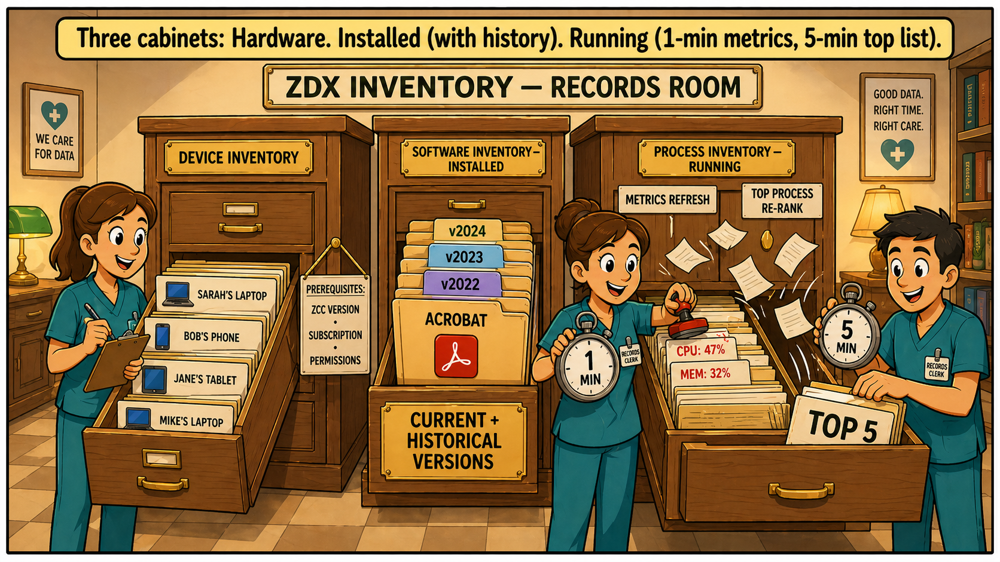
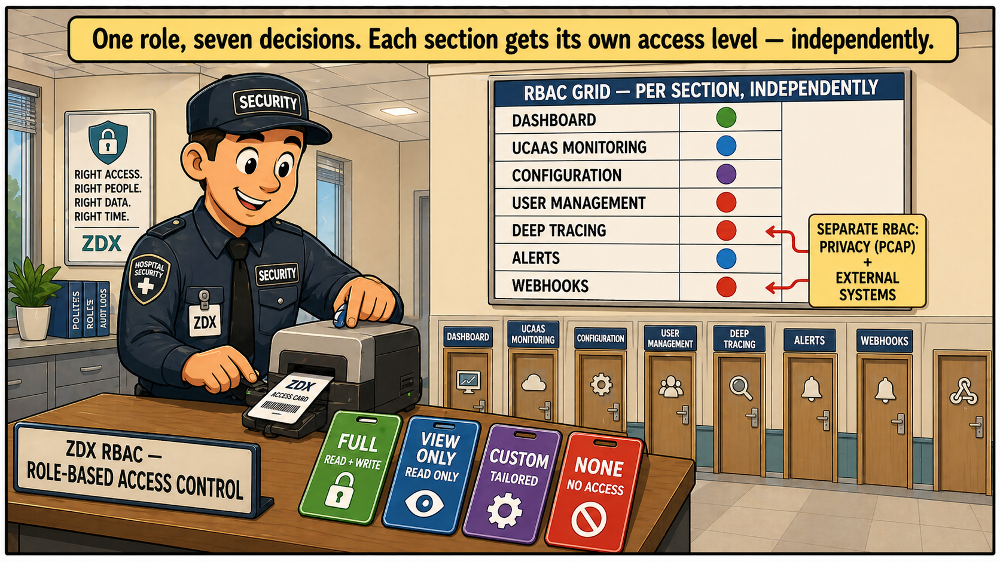
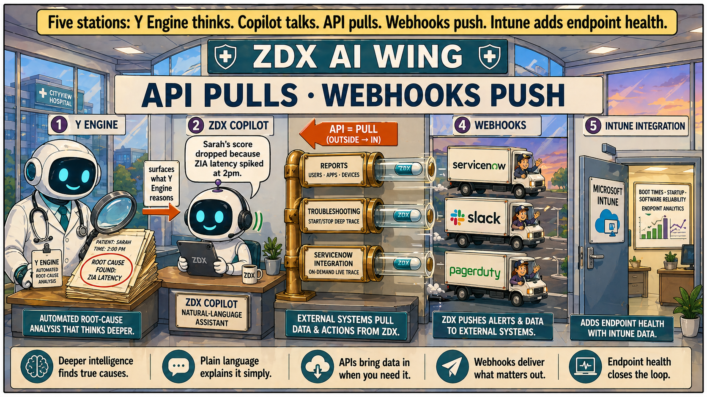

How this palace was built
This palace was constructed scene-by-scene through guided questioning — not handed to you ready-made. Every animal, prop, and label was either invented by you or refined together. Because your brain made the connections, the imagery is far stickier than anything generic.
Walk the building once before bed and once on waking. After two or three full walk-throughs, the rooms recall themselves whenever a ZDX exam question appears.
Using the image prompts: Click any prompt header to expand it. Copy the prompt into your image generator. Drop the result into the placeholder by clicking it and uploading.
Reception — Zscaler the Dog the ZDX Score

Image generation prompt ShowHide
Three-panel comic book illustration, modern flat cartoon style with bold black outlines, cel-shaded colouring, clean speech bubbles. Warm cream and gold palette with teal accents. Hospital reception setting throughout. Aspect ratio 16:9 wide, panels arranged left to right with thin black gutters. PANEL 1 (left): A friendly cartoon dog wearing a name tag clearly labelled "ZSCALER" stands in a hospital reception lobby. The dog is mid-sprint, mouth open happily, carrying a bone clearly labelled "PAGE" back toward a smiling receptionist. A stopwatch hangs around the dog's neck displaying "PFT". A second small icon on the dog's collar shows a battery labelled "AVAILABILITY". Caption box at the top: "PFT = how fast. Availability = is it working at all." PANEL 2 (middle): Same hospital reception. A large wall chart is the focus, clearly titled "7-DAY BASELINE — MON TO SUN" with seven day columns visible. Multiple cartoon dogs of different sizes (chihuahua, beagle, greyhound, bulldog) sit in a row in front of the chart, each with their own dotted baseline line at a different height. Caption box: "Every dog has its own normal. Baselines learn — thresholds don't." PANEL 3 (right): Close-up on the receptionist at her desk wearing oversized glasses. A chunky toggle switch is mounted on the frame of her glasses, clearly labelled "SMOOTH". On her monitor: two side-by-side line graphs — left labelled "OFF" showing a jagged spiky line, right labelled "ON" showing a calm smooth line. Caption box: "Smooth toggle: calmer chart, but you might miss short outages." Style notes: simple shapes, bold cartoon outlines, expressive friendly faces, clear readable text labels on every prop, no painterly textures, no realistic shading. Limited palette: cream backgrounds, warm gold lighting, teal/orange accents, bright red only on chart lines. Sunday newspaper comic strip aesthetic.Triage Board — Sarah's Boards the score hierarchy

Image generation prompt ShowHide
Two-panel comic book illustration, modern flat cartoon style with bold black outlines, cel-shaded colouring, clean caption boxes. Hospital triage area setting. Warm cream and gold palette with teal accents and red highlights. Aspect ratio 16:9 wide. PANEL 1 (left) — "USER VIEW": A friendly cartoon doctor in a white coat with a stethoscope stands beside a large whiteboard. Header reads "USER VIEW — SARAH". Top section labelled "APPS" shows a vertical column of 5 app icons each with a score: Zoom (90), Outlook (95), Salesforce (92), OneDrive (88), Slack (15). The Slack row is circled in thick red marker with an arrow labelled "USER SCORE = WORST APP". Bottom section labelled "DEVICES" shows a small shelf with a laptop, phone, and tablet icon. Below the shelf: "DEVICE SCORE = AVERAGE OF THESE" with a "÷3" symbol. Caption box: "User Score = the worst app. Pain dominates." PANEL 2 (right) — "APP VIEW": Same triage area, different whiteboard. Header reads "APP VIEW — MS TEAMS". Left half labelled "APPLICATION TILE SCORE": a single big tile showing "87" with subtitle "AVG OVER SELECTED PERIOD". Right half labelled "APP SCORE OVER TIME": a wide line graph fluctuating across a horizontal time axis, subtitle "AVG ACROSS ALL USERS". Caption box: "App View = how is this app doing across everyone, now and over time." Style notes: simple shapes, bold cartoon outlines, expressive friendly faces, clear readable text labels. Bright red only used for the circled "worst app" highlight.The Probe Lab — Three Animals how data is collected

Image generation prompt ShowHide
Three-panel comic book illustration, modern flat cartoon style with bold black outlines, cel-shaded colouring, clean caption boxes. Bright hospital laboratory setting throughout. Warm cream and gold palette. Aspect ratio 16:9 wide. A sign visible in all three panels reads "ZDX PROBE LAB". PANEL 1 (left) — WEB PROBE: A friendly cartoon scientist in a white lab coat watches a happy golden retriever named "ZSCALER" mid-fetch, carrying a bone labelled "PAGE". The dog wears a coat with four large letters "P-D-S-A" — PAGE FETCH / DNS / SERVER RESP / AVAILABILITY. A small sign reads "NO CACHE — EVERY FETCH IS REAL". Caption: "Web Probe = is the APP fast?" PANEL 2 (middle) — CLOUD PATH PROBE: A second scientist watches a cartoon kangaroo hopping along three colour-coded trails: GREEN "DIRECT", ORANGE "VIA ZIA", PURPLE "VIA ZPA". Each trail has numbered checkpoint flags. The kangaroo wears a pouch with letters "H-L-P" — HOPS / LATENCY / PACKET LOSS. Caption: "Cloud Path Probe = is the JOURNEY fast? Three paths to triangulate." PANEL 3 (right) — AUTOSENSE CLOUD PATH PROBE: A third scientist holds the leash of a bloodhound sniffing after floating UCaaS app icons (Zoom, Teams, Webex) that drift in different directions. The dog's vest reads "AUTOSENSE — DYNAMIC DESTINATION". A sign reads "FOR UCAAS: IP/PORT CHANGES PER CALL". Caption: "Autosense = Cloud Path for moving targets (UCaaS)." Style notes: simple shapes, bold cartoon outlines, expressive animal faces, clear readable labels.Imaging Suite — The MRI Machine Deep Tracing

Image generation prompt ShowHide
Single-panel comic book illustration, modern flat cartoon style with bold black outlines, cel-shaded colouring. Hospital imaging suite setting. Aspect ratio 16:9 wide. A large cartoon MRI-style scanner labelled "DEEP TRACING — IMAGING SUITE". One single patient lies on the MRI bed mid-scan. Hanging from the bed: a clipboard with three lines — "PATIENT: SARAH / DEVICE: LAPTOP / APP: SALESFORCE". Overhead sign: "ONE USER · ONE DEVICE · ONE APP". On the scanner: a large round control dial from "5" to "60" labelled "MIN", set to 30. Three indicator screens mounted on the scanner: — Screen 1: magnifying glass over a list of running processes — "PROCESS-LEVEL DATA" — Screen 2: stack of envelope icons captured into a folder — "PCAP (PACKET CAPTURE)" — Screen 3: a dumbbell with "↑ UP" and "↓ DOWN" — "BANDWIDTH TEST" A radiologist in scrubs stands beside the scanner with a remote. Behind her, a printer slides out a paper document with the PDF icon and label "EXPORT TO PDF — FOR L2/L3 SUPPORT". Caption: "Deep Tracing = forensic MRI for one user, one device, one app — 5 to 60 minutes."Alarm Tower — Three Sirens Alerts

Image generation prompt ShowHide
Single-panel comic book illustration, modern flat cartoon style. Hospital courtyard at dusk with warm sunset lighting. Aspect ratio 16:9 wide. A tall stone alarm tower labelled "ZDX ALERT TOWER". Three large sirens stacked vertically, colour-coded: — Top siren BLUE labelled "APPLICATION" (subtitle: "DNS · PFT · SERVER RESP · WEB AVAILABILITY") — Middle siren GREEN labelled "DEVICE" (subtitle: "CPU · MEMORY · BATTERY · DISK · WI-FI") — Bottom siren RED labelled "NETWORK" (subtitle: "LATENCY · PACKET LOSS · HOPS") A security guard at the base. A chalkboard mounted on the tower shows wavy lines at different heights, each labelled with a different cartoon dog face — adaptive baselines per app. Chalkboard header: "ADAPTIVE BASELINES — EVERY DOG, ITS OWN NORMAL". Foreground: three large coffee filters labelled "SYDNEY OFFICE", "SALES TEAM", "DEVICE: LAPTOP". Sign above: "ALERT FILTERS — SCOPE THE NOISE". Right side: a cartoon postal worker delivering alerts via three routes: — MUTED: glass display case labelled "PORTAL ONLY" — "MUTED = OBSERVABILITY WITHOUT URGENCY" — EMAIL: large envelope mid-flight with "@" symbol — WEBHOOK: a conveyor belt with a package on a literal hook, splitting into three branches: "SERVICENOW", "SLACK", "PAGERDUTY" Caption: "Three sirens. Adaptive baselines. Coffee-filter scope. Three delivery routes."Records Room — Three Cabinets Inventory

Image generation prompt ShowHide
Single-panel comic book illustration, modern flat cartoon style. Quiet hospital records room with soft warm lamp lighting. Aspect ratio 16:9 wide. Three tall wooden filing cabinets with brass nameplates. Wall sign: "ZDX INVENTORY — RECORDS ROOM". CABINET 1 (left) — "DEVICE INVENTORY": Drawer open with files showing cartoon icons of laptops, phones, tablets tagged with owner names. Sign: "PREREQUISITES: ZCC VERSION · SUBSCRIPTION · PERMISSIONS". A records clerk in scrubs stands beside it. CABINET 2 (middle) — "SOFTWARE INVENTORY — INSTALLED": Deep file folders with multiple stacked version tabs visible ("v2022", "v2023", "v2024") stacked behind each application. Bold sign: "CURRENT + HISTORICAL VERSIONS". CABINET 3 (right) — "PROCESS INVENTORY — RUNNING": Drawer wide open with files flying out. Two clerks working it: — Clerk A with a stopwatch dial reading "1 MIN", stamping fresh numbers ("CPU: 47%", "MEM: 32%") onto files. Label: "METRICS REFRESH" — Clerk B with a stopwatch dial reading "5 MIN", reshuffling files into a stack labelled "TOP 5". Label: "TOP PROCESS RE-RANK" Caption: "Three cabinets: Hardware. Installed (with history). Running (1-min metrics, 5-min top list)."Security Office — The Keycard Printer RBAC

Image generation prompt ShowHide
Single-panel comic book illustration, modern flat cartoon style. Hospital security office with clean clinical lighting. Aspect ratio 16:9 wide. A friendly cartoon security guard at a desk operating a keycard printer. Desk sign: "ZDX RBAC — ROLE-BASED ACCESS CONTROL". Four freshly printed keycards fanned out on the desk: — GREEN card "FULL" (subtitle: "READ + WRITE") — BLUE card "VIEW ONLY" (subtitle: "READ ONLY") — PURPLE card "CUSTOM" (subtitle: "TAILORED") — RED card "NONE" (subtitle: "NO ACCESS") On the wall behind: a large grid chart titled "RBAC GRID — PER SECTION, INDEPENDENTLY". The grid lists seven sections down the left: DASHBOARD / UCAAS MONITORING / CONFIGURATION / USER MANAGEMENT / DEEP TRACING / ALERTS / WEBHOOKS Next to each section: a coloured circle showing that role's access level for that section. A highlighted callout box points at "DEEP TRACING" and "WEBHOOKS" rows: "SEPARATE RBAC: PRIVACY (PCAP) + EXTERNAL SYSTEMS". Caption: "One role, seven decisions. Each section gets its own access level — independently."The AI Wing — Five Stations AI & Automation

Image generation prompt ShowHide
Single-panel comic book illustration, modern flat cartoon style. Bright glass-walled hospital wing with futuristic but warm lighting. Aspect ratio 16:9 wide. Large sign at the top: "ZDX AI WING". Five clearly distinct stations across the panel: STATION 1 (far left) — Y ENGINE: A cartoon AI robot doctor with a stethoscope holds a magnifying glass over patient charts. Top chart has a circled red callout: "ROOT CAUSE FOUND: ZIA LATENCY". Name badge "Y ENGINE" with subtitle "AUTOMATED ROOT-CAUSE ANALYSIS". STATION 2 (left of centre) — ZDX COPILOT: A chatbot character (round face, headset, holding a tablet) at a small desk. Large speech bubble: "Sarah's score dropped because ZIA latency spiked at 2pm." Name badge "ZDX COPILOT" — "NATURAL-LANGUAGE ASSISTANT". Arrow connecting to Y Engine: "surfaces what Y Engine reasons". STATION 3 (centre) — ZDX API: A brass pneumatic tube system on the back wall with three labelled slots: — "REPORTS" (subtitle: "USERS · APPS · DEVICES") — "TROUBLESHOOTING" (subtitle: "START/STOP DEEP TRACE") — "SERVICENOW INTEGRATION" (subtitle: "ON-DEMAND LIVE TRACE") Capsules flying TOWARD ZDX. Large arrow: "API = PULL (OUTSIDE → IN)". STATION 4 (right of centre) — WEBHOOKS: Three cartoon delivery trucks parked outside a window — "SERVICENOW" truck, "SLACK" truck, "PAGERDUTY" truck — driving AWAY from the building. Large arrow: "WEBHOOKS = PUSH (INSIDE → OUT)". STATION 5 (far right) — INTUNE INTEGRATION: A side door labelled "MICROSOFT INTUNE". Through the open door: a chart showing "BOOT TIMES · STARTUP · SOFTWARE RELIABILITY" with subtitle "ENDPOINT ANALYTICS". A bold banner across the top: "API PULLS · WEBHOOKS PUSH". Caption: "Five stations: Y Engine thinks. Copilot talks. API pulls. Webhooks push. Intune adds endpoint health."The 60-second walk-through
Run this in your head before any ZDX question on the exam. Name the animal, name the prop, name the concept.
- Reception — Zscaler the Dog: Stopwatch (PFT) + battery (Availability) → ZDX Score. Wall chart with 7-day baselines per breed. Glasses with SMOOTH toggle on/off trade-off.
- Triage Board — Sarah's Whiteboards: User Score = worst app (Slack at 15 circled in red). Device Score = average of devices (÷3). App Tile Score = avg over period. App Score Over Time = trend across all users.
- Probe Lab — Three Animals: Dog (Web Probe — P-D-S-A, no cache). Kangaroo (Cloud Path — H-L-P, 3 colour-coded trails). Bloodhound (Autosense — dynamic UCaaS destination).
- Imaging Suite — The MRI: Deep Tracing. One user + device + app on the bed. Dial set 5–60 min. Three screens: process data, PCAP, bandwidth dumbbell. Printer outputs PDF for L2/L3.
- Alarm Tower — Three Sirens: Blue Application · Green Device · Red Network. Coffee-filter scope (location, group, device). Three delivery routes: Muted (portal only) · Email · Webhook (ServiceNow/Slack/PagerDuty).
- Records Room — Three Cabinets: Device inventory. Software installed (current + historical versions). Process running (1 min metrics, 5 min top-5 re-rank).
- Security Office — Keycard Printer: Full · View Only · Custom · None. Seven sections, each independently. Deep Tracing and Webhooks get their own because PCAP + external systems.
- AI Wing — Five Stations: Y Engine thinks (root cause). Copilot talks (natural language). API pulls (Reports/Troubleshooting/ServiceNow tap). Webhooks push (ServiceNow/Slack/PagerDuty trucks). Intune side door (endpoint analytics).